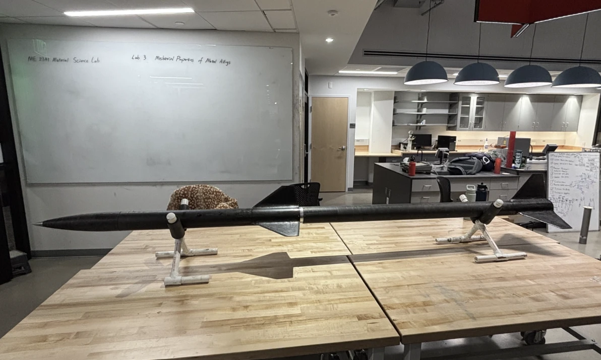
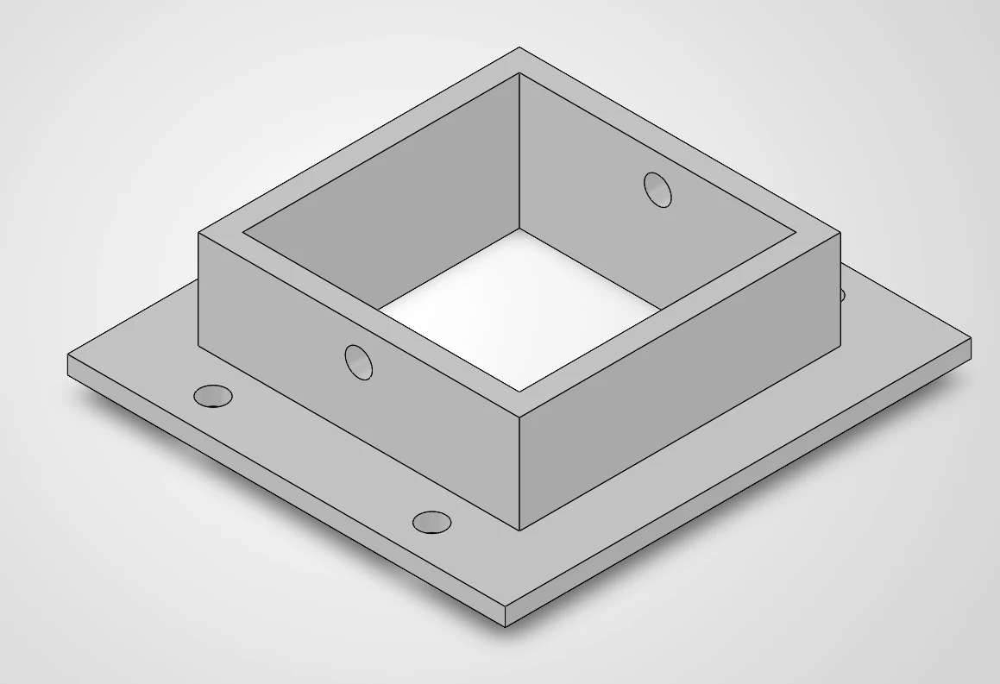
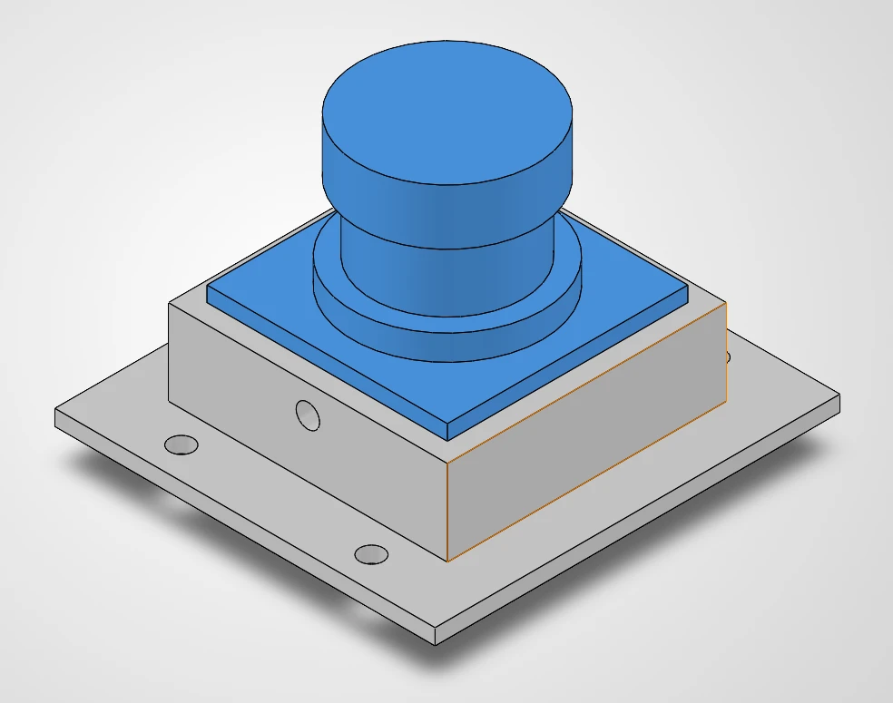
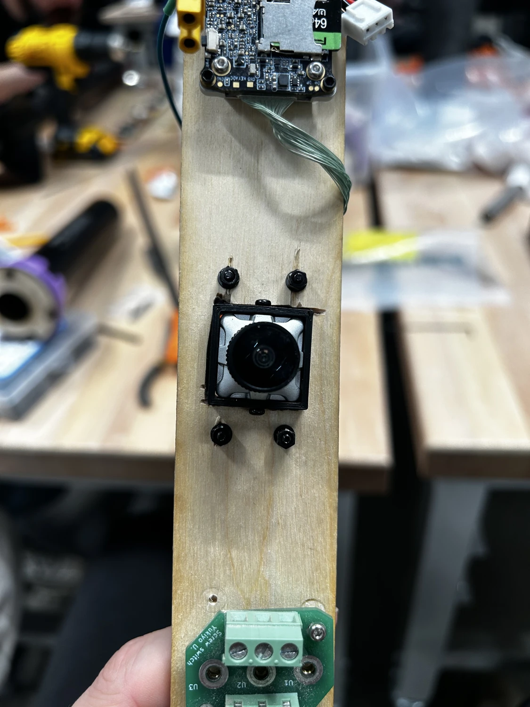
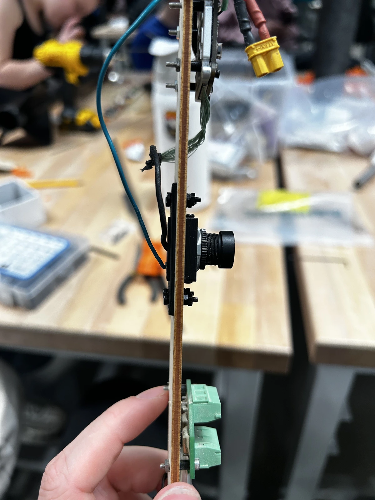
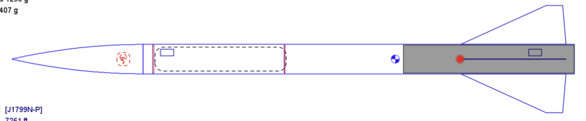

AeroNU
Electronics bay and camera mount
I worked on the layout and design of AeroNU’s electronics bay. The bay sat so close to the rocket’s outer wall that there was too little clearance to mount the camera on the outside of the bay. I designed the mount to hold the camera inside the bay while giving the lens a clear view for recording footage.

Checking the camera’s fit
The front view shows where the camera sits on the electronics board. The side profile shows the tighter constraint. It shows how far the camera and bracket project toward the rocket wall.
Project gallery
Scroll through the images or use the controls.




Testing the avionics before the larger flight
I designed a smaller rocket in OpenRocket to fly before our larger rocket. Its purpose was to test the avionics at supersonic speed, so the team could evaluate their behavior before relying on them for the larger flight.
